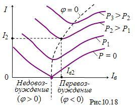

|
 Зависимости тока якоря двигателя от тока возбуждения, т. е. I = f(Iв) при постоянной нагрузке (М = const или P = const) на валу двигателя называют U-образными характеристиками синхронного двигателя. На рис. 10.18 приведено несколько характеристик I = f(Iв) для различных значений мощности. Пунктирная линия соответствует значению коэффициента мощности cosφ = 1. При работе машины в режиме недовозбуждения (левая область характеристик) синхронный двигатель потребляет реактивную мощность из сети и является для неё активно-индуктивной нагрузкой (угол φ > 0). При работе машины в режиме перевозбуждения (правая область) синхронный двигатель генерирует реактивную мощность в сеть и является для неё активно-ёмкостной нагрузкой (угол φ < 0, см. рис. 10.18). Обратите внимание, что при больших токах возбуждения происходит насыщение магнитной цепи машины, в результате чего нарушается линейная зависимость магнитного потока и ЭДС от тока возбуждения. Поэтому правые ветви U-образных характеристик становятся более пологими. Синхронные двигатели мощностью
свыше 100 кВт оказываются экономически выгоднее асинхронных, в основном
благодаря способности работать с опережающим коэффициентом мощности
cosφ. |